更新日 : 2014/04/20
冷蔵庫で保存していたポポーの種を出しました。
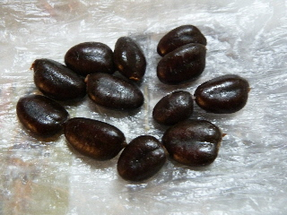
気温が暖かくなったので、そろそろ蒔いたら芽が出そうな気がします。
全部で12個です。何個芽が出るかな？
これから水の管理を頑張ります。
更新日 : 2014/07/05
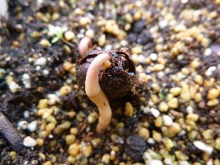
4月に種まきしたポーポーですが芽が出ず、もうあきらめていたんですが、今日何か白いものが出ていました。
この白いのは茎ですよね？根っこじゃないですよね。なんか太くて力強い感じです。
双葉が出ないで茎があるのって、ちょっと格好悪いな。でもまあ、育って良かった。
更新日 : 2014/07/28
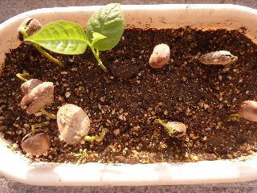
ポポーの茎が出てから20日位経ちました。
やっと1本葉っぱが出ました。成長遅いなー。
他の種も育っているので、発芽率はとってもいいです。
何本育てるといいでしょうか？枯れることを考えると5本とかあった方がいいかな。
このペースで育つのが遅かったら、枯れる可能性も高そうです。
更新日 : 2014/08/31
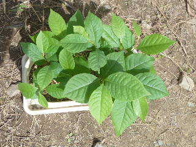
小さい鉢に何個も種を蒔いたので窮屈そうです。植え替えします。
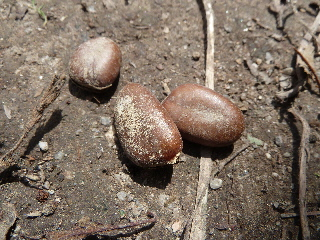
ポポーの種から双葉が出るのかと思っていたら、違っていました。
何だろう？種は栄養が詰まっているところで、そこから根っこや芽が出てくる感じかな？
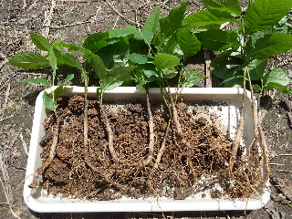
プランタから抜いたらこんな感じ。根っこがごぼうみたい。
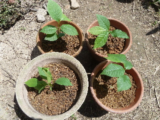
大きいものを4つ選んで鉢植えにしました。早く育って食べれるといいなー。
2014/11/08
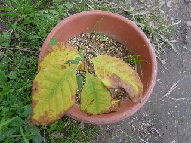
はじめての冬なのでわからないですが、紅葉してる感じがします。
こんな小さい木が落葉しちゃったら寂しいだろうなー。大きく育ったら綺麗なんだろうなー。
更新日 : 2014/11/16
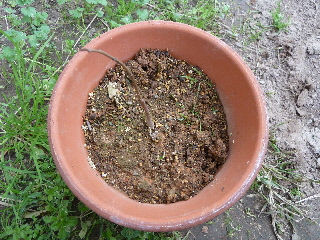
枯れ木みたい。葉っぱ落ちると、存在感なくなりますね。忘れてしまいそう。
春に葉っぱが出るタイミングで水やりが出来るかな？
2015/04/25
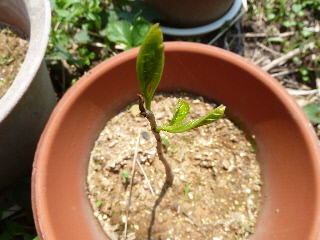
ひょろひょろした枯れ木状態のポポーから芽が出て来ました。
枯れていなくてよかった。今年1年でどれくらい大きくなるかな？
更新日 : 2015/09/27
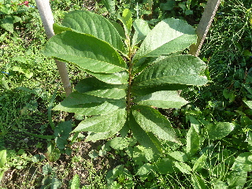
ポポーの地植えは葉っぱが沢山です。
鉢植えのポポーはあんまり育っていなかったので、地植えにしました。
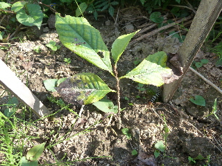
小さいでしょ。始めから鉢植えにしなければ良かった。
2018/01/14
ポポーを地に植えているんですが、当初全部が育つと思っていなかったので株間を狭くして植えていました。
少し大きくなったので、間隔を広くするために植え替えしました。
ポポーの植え替えは難しいって本で読んだことがあったんですが、実際無理かも？って思いました。
木の根っこがゴボウみたいに真っ直ぐ下に生えてるんですね。引っこ抜くことが出来ないので、根っこを切断して移植しました。
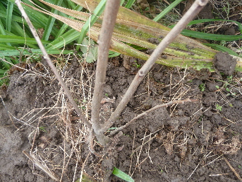
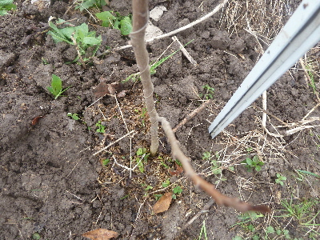
育ってくれるといいんですが、どうでしょうね。
更新日 : 2020/04/05
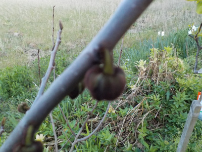
実生のポポーに初めての花がつきました。
ポポーの木は数本あるんですが、開花したのはこの1本だけなので受粉は無理のようです。
更新日 : 2020/05/17
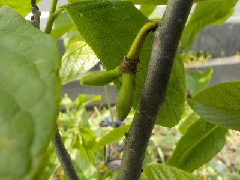
花は沢山咲いていたんですが、実は2房しか確認できませんでした。最初の年はこんなもんなのかな。
まだ花が咲いているので、それらに実が付くのを期待します。
更新日 : 2020/07/12
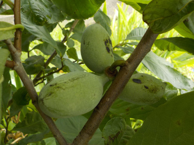
実生のポポーですが、ちゃんと実が育っているようです。
只今5センチくらいなので、収穫時にはそこそこ大きくなっているんじゃないでしょうか。収穫が楽しみです。
更新日 : 2020/09/13
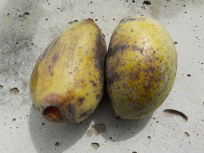
ポポーの実が木から落ちました。
マスカットみたいなバナナみたいな甘いいい匂いです。こってりした濃い甘さで美味しかったです。
ポポーを食べたのは、この実の親の実以来です。とっても久しぶりです。
更新日 : 2020/09/29
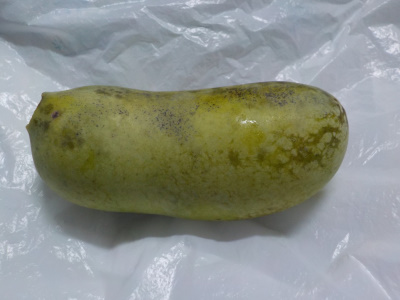
今年一番の大きさのポポーを収獲しました。
まだ青いですが、毎日熟れるのを見るのは面倒なので先に採りました。多分明日か明後日には食べごろになるでしょう。
大きさを測ったら8.5センチでした。ちょっと小さいです。ポポーはクセがある味なので、少し小さいくらいが丁度いいかなと思いました。
ポポーは実生で十分な気がする。